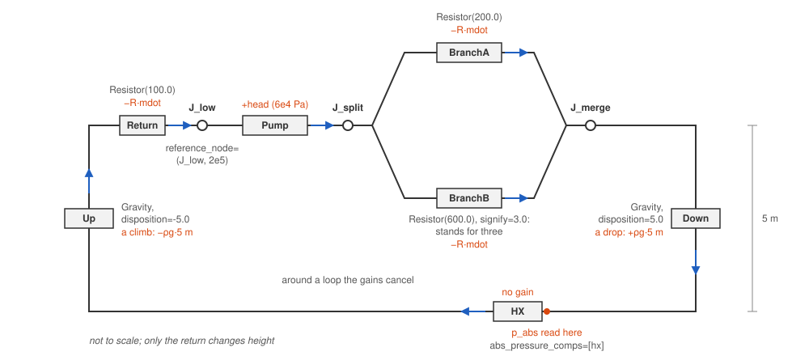

Wire a flow network
Write a calculation feeds one calculation its inputs by hand. A loop of the library’s components is wired by FlowGraph: it takes the edges, each a flow_edge between two junctions with its components in series, and builds the loop’s aggregator and the Kirchhoff calculation holding every edge’s flow.
This page wires a loop small enough to check by hand: a pump, two resistances in parallel, one standing for three, and a return that drops 5 m to a heat exchanger and climbs back. It checks the heights, solves, reads the flows, then adds a flywheel.
[1]:
from stream.calculations import Gravity, HeatExchanger, Inertia, Junction, KirchhoffWDerivatives, Pump, Resistor
from stream.composition import FlowGraph, flow_edge
from stream.substances import light_water
from stream.units import g
Junctions and edges
Name every junction: an unnamed Junction takes its name from a counter, and the Kirchhoff calculation spells its keys with junction names, so they change between runs.
An edge’s direction is the direction of positive flow, and every component’s pressure is a gain along it: a Pump adds its head, a Resistor subtracts \(R \dot m\), a Gravity adds \(\rho g \Delta h\) for a disposition \(\Delta h\), positive for a drop. Around a loop the gains cancel. A reversed edge that still closes its loop builds a different plant, and nothing complains: its pump and its Gravity change sign. signify=3.0 makes the second branch stand for
three: its flow is one branch’s, and its junctions count it thrice. A graph that is not strongly connected raises a ValueError at construction, and so does a component on two edges of one graph; the same instances may sit in a second FlowGraph.
abs_pressure_comps asks for the absolute pressure at a component’s inlet; the heat exchanger ignores it and is listed only so the page can read a pressure there.

The loop the cell below wires: arrows give positive flow, orange labels the gains.
[2]:
j_low, j_split, j_merge = Junction(name="J_low"), Junction(name="J_split"), Junction(name="J_merge")
pump = Pump(pressure=6e4, name="Pump")
branch_a, branch_b = Resistor(200.0, name="BranchA"), Resistor(600.0, name="BranchB")
down, up = Gravity(light_water, disposition=5.0, name="Down"), Gravity(light_water, disposition=-5.0, name="Up")
hx = HeatExchanger(outlet=40.0, name="HX")
ret = Resistor(100.0, name="Return")
fg = FlowGraph(
flow_edge((j_low, j_split), pump),
flow_edge((j_split, j_merge), branch_a),
flow_edge((j_split, j_merge), branch_b, signify=3.0),
flow_edge((j_merge, j_low), down, hx, up, ret),
reference_node=(j_low, 2e5),
abs_pressure_comps=[hx],
)
agr, K = fg.aggregator, fg.kirchhoff
print(list(K.variables))
['(J_low -> J_split, 0)', '(J_split -> J_merge, 0)', '(J_split -> J_merge, 1)', '(J_merge -> J_low, 0)', '(p_abs of HX)']
The keys are the edges, (tail -> head, n) with n counting parallel edges, and the heat exchanger’s inlet pressure, measured from J_low, pinned at 2 bar by reference_node.
Check the heights
A loop whose heights do not close at zero flow drives a flow nobody built, so run check_gravity_mismatch before the first solve; Building the Pool Reactor Loop describes what it sums.
[3]:
fg.check_gravity_mismatch()
print("every loop closes at zero flow")
every loop closes at zero flow
The return’s two gravity heads cancel, and the check is silent.
Solve and read the flows
fg.guess_steady_state takes a flow for one component on every edge and a temperature, and computes the pressures. By hand, the branches share one pressure difference and the return carries \(\Delta p\,(1/R_A + 3/R_B)\), so with \(H\) the pump’s head
Read each flow through K.component_edge, which returns the key of a component’s edge; a copied key breaks once a junction is renamed or an edge added.
[4]:
guess = fg.guess_steady_state({pump: 100.0, branch_a: 50.0, branch_b: 20.0, ret: 100.0}, 40.0)
state = agr.save(agr.solve_steady(guess))
flows = {c.name: state[K.name][K.component_edge(c)] for c in (pump, branch_a, branch_b, ret)}
for name, mdot in flows.items():
print(f"{name:>8} flow: {mdot:8.3f} kg/s")
dp = 6e4 / (1 + 100.0 * (1 / 200.0 + 3 / 600.0))
print(f"branch pressure difference by hand: {dp / 1e5:.3f} bar")
print(f"branch A by hand: {dp / 200.0:8.3f} kg/s, branch B by hand: {dp / 600.0:8.3f} kg/s")
print(f"J_split balance: {flows['Pump'] - flows['BranchA'] - 3 * flows['BranchB']:.1e} kg/s")
p_hx = 2e5 + 6e4 - dp + float(light_water.density(40.0)) * g * 5.0
print(f"HX inlet: {state[K.name][f'(p_abs of {hx.name})'] / 1e5:.4f} bar, by hand {p_hx / 1e5:.4f} bar")
Pump flow: 300.000 kg/s
BranchA flow: 150.000 kg/s
BranchB flow: 50.000 kg/s
Return flow: 300.000 kg/s
branch pressure difference by hand: 0.300 bar
branch A by hand: 150.000 kg/s, branch B by hand: 50.000 kg/s
J_split balance: 2.8e-14 kg/s
HX inlet: 2.7861 bar, by hand 2.7861 bar
The branches carry about 150 kg/s and 50 kg/s, the hand values for a 0.3 bar difference, and J_split balances with branch B counted three times. The heat exchanger’s inlet pressure is the reference plus the gains on the way: the pump’s head, branch A’s loss and 5 m of water.
Flywheels, flappers and heated channels
Flywheels. An Inertia needs the flow’s derivative: list it in inertial_comps and pass k_constructor=KirchhoffWDerivatives, which adds one mdot2 row per edge. inertial_comps with the plain Kirchhoff raises a TypeError.
Flappers. A Flapper reads the clock, funcs={flapper: {"t": identity}}, and the flow it watches, declared on the watched edge by ref_mdot_for=(flapper,). ref_mdots narrows that list; left out, every component named there receives the edge’s flow.
Heated channels. A ChannelAndContacts reads the absolute pressure p_abs, with no default: list it in abs_pressure_comps and give a reference_node.
The cell below puts a flywheel on the pump edge.
[5]:
flywheel = Inertia(5.0, name="Flywheel")
fg_w = FlowGraph(
flow_edge((j_low, j_split), pump, flywheel),
flow_edge((j_split, j_merge), branch_a),
flow_edge((j_split, j_merge), branch_b, signify=3.0),
flow_edge((j_merge, j_low), down, hx, up, ret),
reference_node=(j_low, 2e5),
abs_pressure_comps=[hx],
inertial_comps=[flywheel],
k_constructor=KirchhoffWDerivatives,
)
K_w = fg_w.kirchhoff
print(list(K_w.variables)[K_w.variables_by_type["mdot2"]])
['(J_low -> J_split, mdot2 0)', '(J_split -> J_merge, mdot2 0)', '(J_split -> J_merge, mdot2 1)', '(J_merge -> J_low, mdot2 0)']
Each edge gains a (tail -> head, mdot2 n) row holding its flow’s derivative, and the flows become differential rows.
Building the Pool Reactor Loop wires a full loop with every keyword on this page, a flapper and check valves included. The Cube Problem builds a many-junction network, and Sign conventions collects the signs. The usual next task: Choose a channel and its laws.